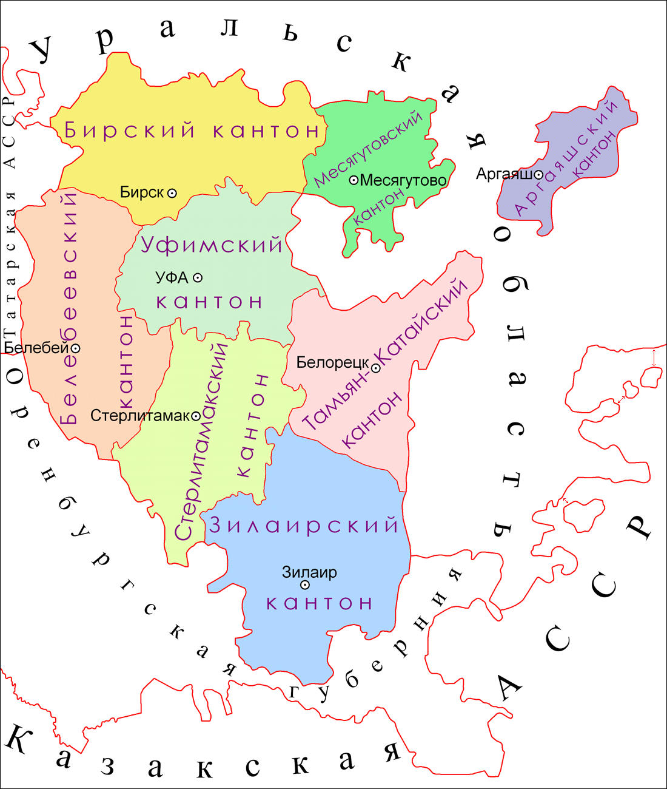

В XIX веке произошло 2 крупных события: кантонное управление, Отечественная война 1812-1816 годов. Давайте рассмотрим их более подробно.
Кантонное управление. 10 апреля 1778 года бывший глава Уфимского наместничества Игельстром ввёл кантонную систему в Башкирии. Это стало первым опытом России в подобной военной формы управления, ведь кантонная система действовала весьма успешно в Австро-Венгрии и Пруссии (Германии).
Теперь территория Оренбургской губернии делилась на 24 кантона, из них 11 башкирских (в 1805 году был добавлен 12-й кантон). Каждый мужчина в возрасте 18 лет был обязан нести 30-летнюю военную службу, а с 1805 года помимо солдатской службы было необходимо строить дороги и мосты, заготавливать лес, укреплять пограничные линии. В то время у Российской империи была большая потребность в кантонном управлении: во-первых, Оренбургская губерния была самой южной границей страны, которой требовалась надёжная защита; во-вторых, была необходимость в контроле башкирской территории, на которой неоднократно вспыхивали восстания.
Когда в России был присоединён Казахстан, потребность в кантонном управлении Оренбургской губернии исчезла. Таким обязан, в 1865 году все кантоны были упразднены и башкирский народ получил права свободных сельских жителей (новое сословие).
Хотя кантонная система использовалась только в первой половине XIX века, она оставила глубокий отпечаток на культурной жизни башкир. Из-за данной формы управления, всё башкирское население жёстко контролировалось царской полицией и русскими чиновниками, в конце концов в 1834 году вспыхнуло восстание, в котором приняли участие, как башкирское, так и русское крестьянство. По причине неорганизованности, мятеж был быстро подавлен графом Перовским, повстанцы жестоко наказаны (пытка и отправка в Сибирь). Несмотря на то что восстание было неудачным, некоторые права на свободу башкирам удалось сохранить.
Отечественная война 1812 и заграничный поход. Башкиры принимали активное участие в Отечественной войне против Наполеона. В Российской компании принимало участие 28 башкирских полков (500 воинов в каждом), а также башкирским правительством было выделено около 4,2 тысяч лошадей.
Известен случай в Сражении под Бородином. Французы, обрушев на наш горнизон крупные силы, захватили батарею Раевского. Генерал Ермолов с батальёном Уфимского полка и Оренбургским драгунским полком остановил защитников батареи и повёл их в контратаку - французы были отбросаны. Активное участие в Бородинском сражении принял генерал Платов с донскими казаками и башкирской конницой: его полк дествовал во французком тылу, сея панику в рядах противника.
Также башкирские полки отличились в бою под Лейпцингом, проявив мужество и героизм, при разгроме войск Наполеона. В Битве Народов (Сражении под Лейпцингом) французы прозвали башкир «северными амурами», позже Кутузов благодарил воинов за доблесть в бою. На тему Отечественной войны были написаны песни «Кутузов», «Эскадрон», «Кахым туря», «Любизар» и многие другие.
– А знаете, - спросил Гёте с таинственной улыбкой, когда Эккерман закончил свой рассказ, - у меня, кажется, есть одна вещица, которая вас порадует. Что если мы сейчас спустимся вниз, и в руках у вас окажется настоящий башкирский лук?
— Башкирский лук? – воскликнул я вне себя от восторга, — Самый настоящий?
— Да, сумасбродный вы человек, самый настоящий, — сказал Гёте».
И из какой-то хозяйственной постройки в своем саду поэт извлек старый лук. «Вот он. Все такой же, каким был в 1814 году, когда мне торжественно преподнес его начальник башкирского отряда».Кто бы еще несколько лет назад мог предвидеть, что в аудитории нашей протестантской гимназии будет совершаться магометанская служба и читаться суры Корана. Но это произошло, и мы присутствовали на башкирской службе, видели их муллу и приветствовали их князя в театре. В виде особой чести мне преподнесли лук и стрелы, которые я, на вечную память, повешу над очагом.